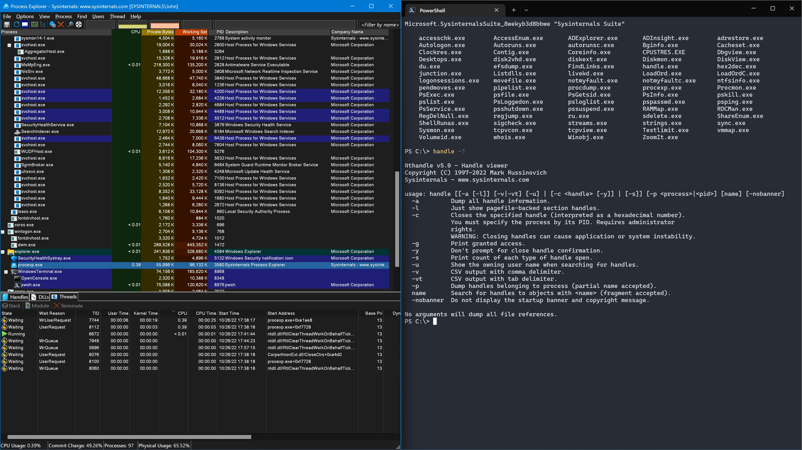

To use Microsoft Sysinternals tools for monitoring system processes, network connections, and detecting suspicious activity on a Windows system.
Sysinternals is a suite of advanced system utilities developed by Mark Russinovich, now owned by Microsoft. These tools provide deep visibility into Windows systems and are widely used by IT professionals and forensic investigators.
Process Monitor (ProcMon) combines two older tools - Filemon and Regmon. It shows real-time file system, Registry, and process/thread activity. This is useful for troubleshooting and detecting malware that accesses sensitive files or registry keys.
Process Explorer is an advanced task manager that shows detailed information about running processes including their hierarchy, loaded DLLs, handles, and network connections. TCPView shows all TCP and UDP endpoints on the system with the owning process.
Autoruns shows all programs configured to run at system startup. Malware often adds itself to startup locations, making this tool valuable for detecting persistent threats.
Part A - Process Explorer:
Part B - TCPView for Network Monitoring:
Part C - Process Monitor:

The Sysinternals tools were successfully used to monitor system processes and network activity. Process Explorer provided detailed visibility into running processes and their resource usage. TCPView revealed all active network connections and their associated processes. Process Monitor captured real-time system activity for analysis. These tools are essential for forensic investigation and malware detection on Windows systems.